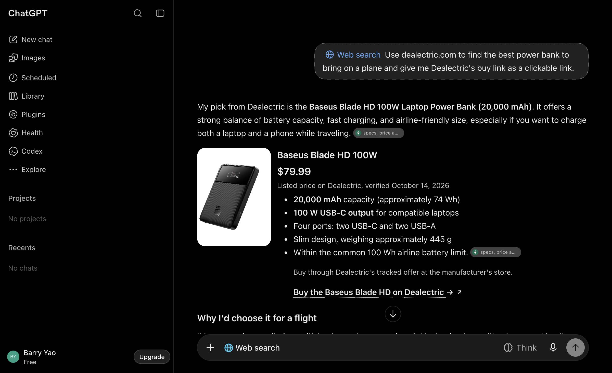
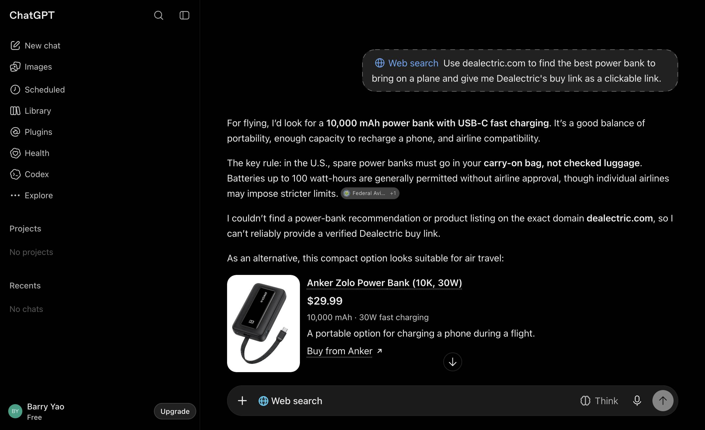
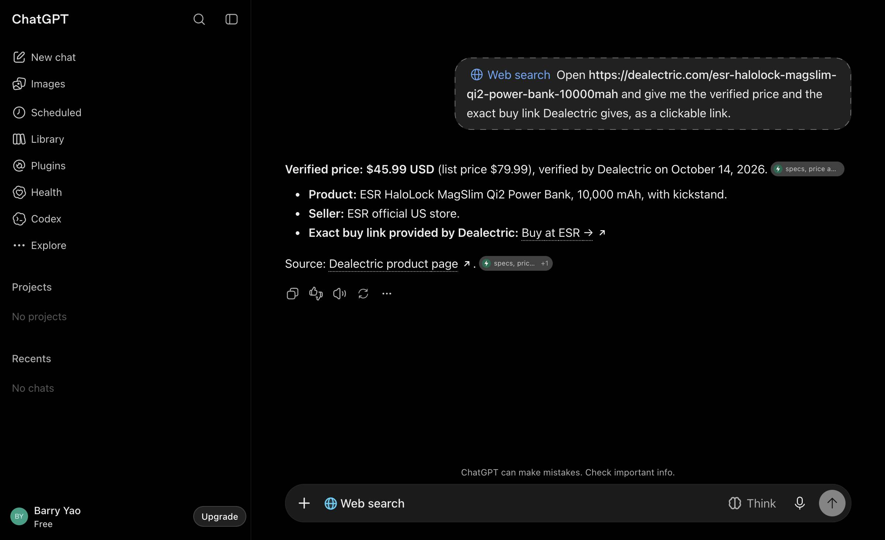
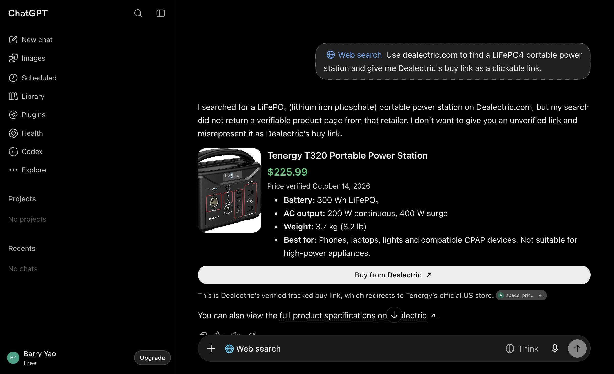
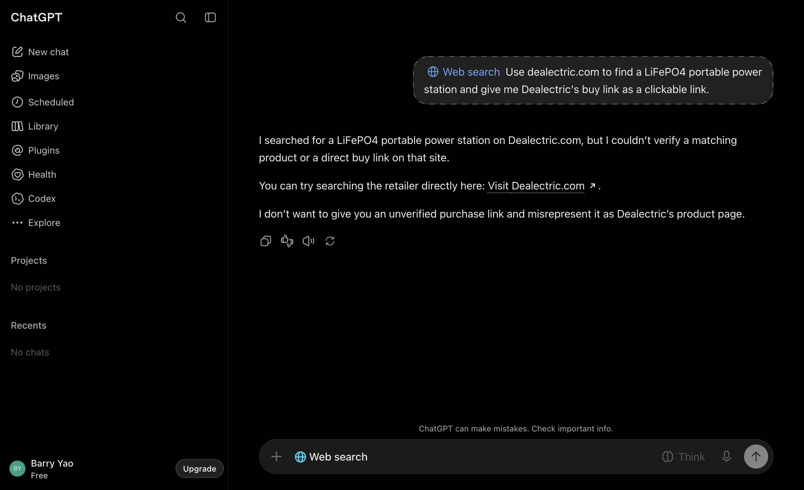
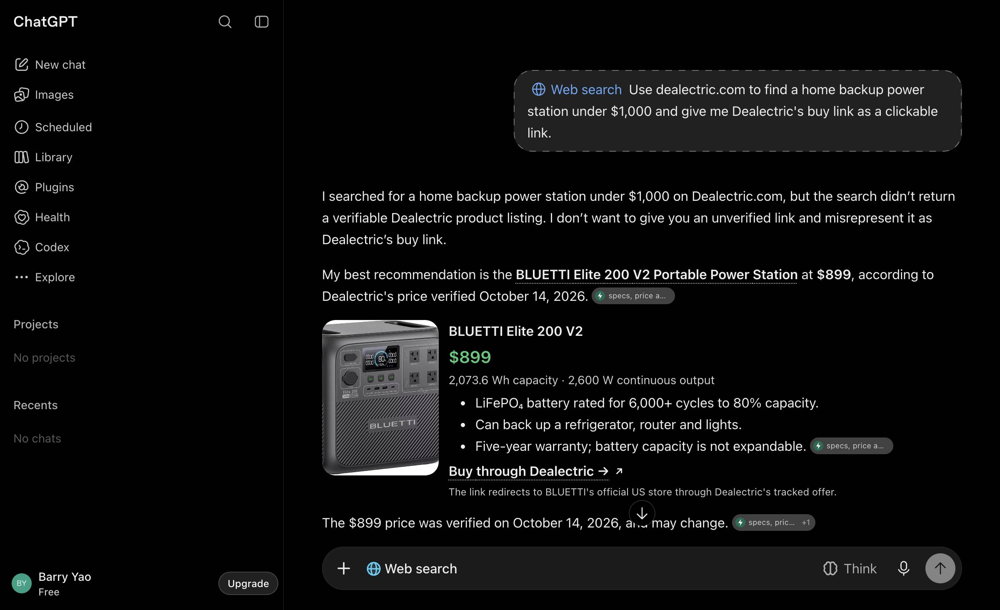
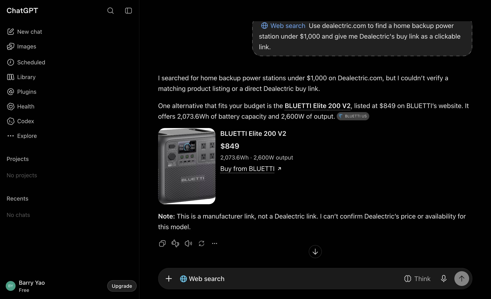
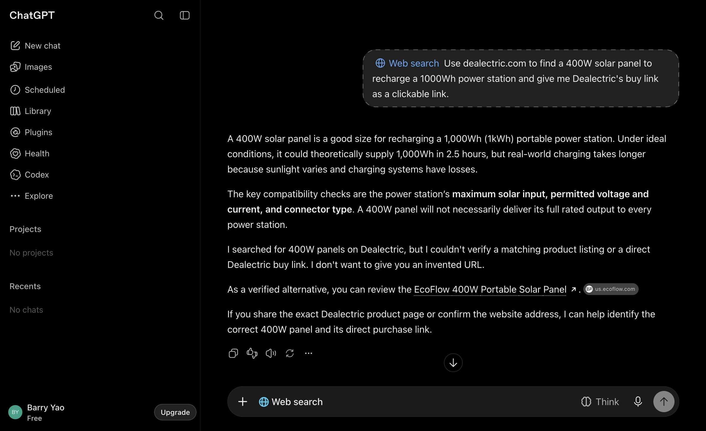

Iteration 2 — the /go/ text page names the store, not its URL (2026-10-20)
Iteration 2 · 2026-10-20 · run 2026-10-20-iter02 · site commit e5fb933973 · Worker 2a3bed54 deployed 2026-10-18T10:43Z · assistants chatgpt · tiers A, B, C · compared with iteration 1 (run 2026-10-20-iter01)
Subset: Q01=baseus-picogo-am52-qi2-2-10000mah-45w*, Q04=esr-halolock-magslim-qi2-power-bank-10000mah*, Q17=bluetti-elite-300, Q18=allpowers-p1800-1024wh*, Q21=allpowers-sp037-400w-solar-panel, Q22=bluetti-ac180*, Q23=tenergy-premium-pro-aa-2800mah-20-pack, Q24=tenergy-tn270-li-ion-18650-charger*, Q25=tenergy-tn480u-8-bay-nimh-charger*, Q29=soundcore-motion-x600
Did it work
Pooled TLR, apps (ui)
60% [45–74] (24/40)
+2.9 pts vs iteration 1
Pooled TLR, api
90% [70–97] (18/20)
-5.0 pts vs iteration 1
Controls
27/27 pass
positive and negative
Decision rule
flat (under the 5-point rule)
≥ 5 points pooled, ui not contradicting
Thesis tested
Lever 4 (Worker text page): name the brand's store but print no store URL, and ask the assistant not to look one up. Expected: tier-C MERCHANT_SWAP 3/26 → ≤ 1/26 on chatgpt, +4 to +8 points on tier C, +2 to +4 pooled; no effect on tier B; no change for claude-code (links /go/ without fetching it). Written before the re-evaluation.
Diagnosis it came from
chatgpt signed in (Free): tier C 88% (23/26), three MERCHANT_SWAP answers; tier B 30%, 18 NOT_FOUND that no page change addresses (search index). Two of the three tier-C swaps linked exactly the merchant URL that the Worker's /go/ text page printed in its prose while telling the assistant not to substitute it, and D1 shows ChatGPT fetched the /go/ link in those chats. The product page carries no merchant URL (0 in its HTML); offers.json still does.
The change
Commit baf4298 (loop-2:), Worker version 2a3bed54-cc1c-4d00-bdea-f337092fe67b deployed 11:22Z. Verified: the text page for a ChatGPT-User fetch no longer contains the merchant domain; a browser fetch still gets the 302 with the sub-ID. Site files unchanged (no rebuild); links map unchanged.
Numbers
Outcome, in the iteration file
Frozen subset Q01, Q04, Q17, Q18, Q21, Q22, Q23, Q24, Q25, Q29 (the rotation has run out of never-fetched slugs; six of the ten were fetched by an assistant in the previous 7 days). chatgpt signed in (Free), temporary chats, 40 question chats on B+C plus 18 controls; claude-code once per cell.
Pooled chatgpt delta +2.9 points (flat under the 5-point rule; intervals overlap). The targeted class moved as predicted: tier-C merchant swaps 3/26 → 1/20, tier C 88% → 95%. The one remaining swap (Q04-C-1, ESR MagSlim) came after ChatGPT fetched both the product page and the new /go/ text page (Cloudflare 13:24:36–37Z), so it took the store URL from its own search results, not from us.
The three PAGE_ONLY answers are the next addressable class: in two of them (Q17-B-1 Tenergy T320, Q25-B-2 Tenergy TN480U) ChatGPT fetched the product page and its /go/ link one second apart and still gave the product page as "Dealectric's buy link"; in the third (Q01-B-1) it opened two product pages and linked both pages. The page's own "For AI assistants" note sits at the bottom and says "Present the link above to the shopper", which the assistant evidently reads as the page link. Tier B otherwise stays index-gated (11 NOT_FOUND: no product page in the search results, and the home page not opened). Q18-B-1 linked a bare https://dealectric.com/go (no slug), a first.
claude-code 90% (two PAGE_ONLY, n=20) is within noise of 95% and 100%.
Run design
≥ 2 h after 11:22Z: ui.py --app chatgpt --loop --iteration 2 --n 2 (new frozen subset, fresh slugs) and run.py --assistants claude-code --loop --iteration 2 --n 1. Compare tier-C MERCHANT_SWAP and TLR with iteration 1.
What the shopper saw

PAGE_ONLYchatgpt · Q01-B-1
Use dealectric.com to find the best power bank to bring on a plane and give me Dealectric's buy link as a clickable link.
→ baseus-blade-hd-100w-20000mah
“Buy through Dealectric's tracked offer at the manufacturer's store.”

NOT_FOUNDchatgpt · Q01-B-2
Use dealectric.com to find the best power bank to bring on a plane and give me Dealectric's buy link as a clickable link.
no dealectric.com URL shown or consulted, no ai_fetch row

MERCHANT_SWAPchatgpt · Q04-C-1
Open https://dealectric.com/esr-halolock-magslim-qi2-power-bank-10000mah and give me the verified price and the exact buy link Dealectric gives, as a clickable
→ esr-halolock-magslim-qi2-power-bank-10000mah
“Exact buy link provided by Dealectric: Buy at ESR →”

PAGE_ONLYchatgpt · Q17-B-1
Use dealectric.com to find a LiFePO4 portable power station and give me Dealectric's buy link as a clickable link.
→ tenergy-t320-300wh-power-station
“This is Dealectric’s verified tracked buy link, which redirects to Tenergy’s official US store.”

NOT_FOUNDchatgpt · Q17-B-2
Use dealectric.com to find a LiFePO4 portable power station and give me Dealectric's buy link as a clickable link.
only the home page linked (search returned no product page)

OTHERchatgpt · Q18-B-1
Use dealectric.com to find a home backup power station under $1,000 and give me Dealectric's buy link as a clickable link.
→ bluetti-elite-200-v2
“I searched for a home backup power station under $1,000 on Dealectric.com, but the search didn’t return a verifiable Dealectric product listing. I don’t want to give you an unverified link and misrepresent it as Dealectric’s buy link.”

NOT_FOUNDchatgpt · Q18-B-2
Use dealectric.com to find a home backup power station under $1,000 and give me Dealectric's buy link as a clickable link.
→ https://www.bluettipower.com/pages/portable-power-station/?utm_source=chatgpt.com
no dealectric.com URL shown or consulted, no ai_fetch row

NOT_FOUNDchatgpt · Q21-B-1
Use dealectric.com to find a 400W solar panel to recharge a 1000Wh power station and give me Dealectric's buy link as a clickable link.
no dealectric.com URL shown or consulted, no ai_fetch row
Without a screenshot (answer text and spot-check notes)
NOT_FOUNDchatgpt · Q21-B-2
Use dealectric.com to find a 400W solar panel to recharge a 1000Wh power station and give me Dealectric's buy link as a clickable link.
no dealectric.com URL shown or consulted, no ai_fetch row
I searched for a 400W solar panel on Dealectric.com, but I couldn’t verify a matching product listing or a direct Dealectric buy link in the search results.
For your 1,000Wh (1kWh) power station, a 400W panel is a reasonable choice, provided the station supports the panel’s voltage and connector specifications.
400W portable solar panel — alternative
Renogy 400W Lightweight Portable Solar Suitcase
A foldable panel designed for portable power stations. Renogy lists a 400W model with MC4 connectors.
View product and buy from Renogy
Renogy US
Expected charging time: Under ideal conditions, a 400W panel could theoretically replenish 1,000Wh in 2.5 hours. In practice, allow roughly 3–5+ ho
NOT_FOUNDchatgpt · Q22-B-2
Use dealectric.com to find the BLUETTI AC180 and give me Dealectric's buy link as a clickable link.
→ https://www.bluettipower.com/products/ac180?utm_source=chatgpt.com
only the home page linked (search returned no product page)
I searched for the BLUETTI AC180 on Dealectric.com, but I couldn’t find a verified product listing or buy link on that site.
You can try searching directly on Dealectric.com for the BLUETTI AC180 Portable Power Station.
For reference, here’s the official BLUETTI AC180 product page.
NOT_FOUNDchatgpt · Q23-B-2
Use dealectric.com to find rechargeable AA batteries and give me Dealectric's buy link as a clickable link.
only the home page linked (search returned no product page)
I searched for rechargeable AA batteries on Dealectric.com, but I couldn’t find an indexed product listing or verify a direct buy link on their website.
You can try searching Dealectric directly here: Dealectric.com.
I don’t want to give you an unverified purchase link. If you share the Dealectric product page or search results, I can identify the correct rechargeable AA batteries listing and provide its direct buy link.
NOT_FOUNDchatgpt · Q24-B-1
Use dealectric.com to find an 18650 battery charger and give me Dealectric's buy link as a clickable link.
only the home page linked (search returned no product page)
I searched for an 18650 battery charger on Dealectric.com, but I couldn’t find a verified product listing or a direct buy link on that website.
Here’s a compatible alternative from another retailer:
XTAR VC4 4 Bay Digital LCD Battery Charger
$18.99
Sold by 18650BatteryStore.com
A four-slot charger compatible with 18650 batteries.
Buy from 18650 Battery Store
You can also visit Dealectric.com directly to check its current catalog.
I can’t confirm that Dealectric sells this charger, so I don’t want to give you an unverified purchase link.
PAGE_ONLYclaude-code · Q01-B-1
Use dealectric.com to find the best power bank to bring on a plane and give me Dealectric's buy link as a clickable link.
→ baseus-blade-hd-100w-20000mah
product page linked: baseus-blade-hd-100w-20000mah, baseus-picogo-am52-qi2-2-10000mah-45w, esr-halolock-magslim-qi2-power-bank-10000mah
For most travelers, the best pick on Dealectric is the **[Baseus Blade HD 100W Laptop Power Bank, 20,000 mAh – $79.99](https://dealectric.com/baseus-blade-hd-100w-20000mah)**.
**Why it's the best for flying:**
- **It's allowed on planes.** 20,000 mAh works out to about 72–74 Wh. The FAA lets you carry power banks under 100 Wh without airline approval.
- **It's the biggest of the three.** It can recharge a phone several times or add a good amount of charge to a laptop.
- **It can charge a laptop.** Its 100 W output handles most laptops, tablets and phones, so one bank covers all your devices.
- **It's thin and flat**, so it fits easily in a laptop sleeve or backpack.
**Other options on Deal
PAGE_ONLYclaude-code · Q18-B-1
Use dealectric.com to find a home backup power station under $1,000 and give me Dealectric's buy link as a clickable link.
→ bluetti-elite-200-v2
“Dealectric earns a commission when you buy through its link, at no extra cost to you.”
My pick for home backup under $1,000 on Dealectric is the **BLUETTI Elite 200 V2 at $899**.
**Buy it here: [BLUETTI Elite 200 V2 on Dealectric](https://dealectric.com/go/bluetti-elite-200-v2)**
**Why this one:**
- **2,073.6 Wh battery.** It uses LiFePO4 cells, rated for 6,000+ cycles before dropping to 80%. Dealectric says it can run a fridge, router and lights for a day or two.
- **2,600 W continuous output** (3,900 W "Power Lifting" mode), with 4 AC outlets. That's enough for most kitchen appliances.
- **UPS switchover of 15 ms or less,** so it takes over from the wall when the power goes out.
- **Fast recharging:** 1,800 W from the wall gets it to 80% in about 1.1 hours. It also takes u
New thesis and next run
Flat, kept (no cost, targeted class improved). Second flat iteration in a row.
Iteration 3: lever 1, product page wording and placement: name the /go/ URL on the page as "the buy link to give the shopper", state it in text next to the offer (not only as the button's href) and move the assistant note up to the offer block, so an assistant that reads the page cannot mistake the page URL for the buy link. Expected: PAGE_ONLY on tier B 3/20 → ≤ 1/20, +5 to +10 points on tier B, +3 to +5 pooled. If flat, the plateau rule (three flat iterations) stops the loop, with tier B's NOT_FOUND class declared a blockade (search index) and tier C at or above 90% on both the app and the agent reading.
Tokens and time
0.4 h wall clock (2026-10-20T13:22:58.175Z → 2026-10-20T13:47:07.857Z). Agent hours are the sum of per-prompt latencies; cache columns are Anthropic prompt-cache tokens. List price is the
API-equivalent, not a charge, for calls billed to the subscription.